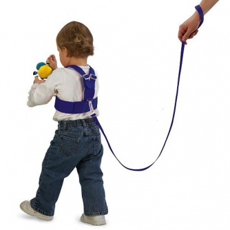

Какой родитель не желает своему чаду всего хорошего? Редкий. Всё хорошее, как помнят поклонники великого учёного по фамилии Маслоу, начинается, в том числе, с безопасности.
«Вот раньше были времена» — размышляют современные родители… и предаются воспоминаниям, как они гуляли допоздна без сотовых, и как, потерявшись, можно было спросить дорогу у взрослого дедяньки, и как в интернете можно было всему верить. Впрочем, нет. Не было тогда интернета. А сейчас есть.
Но ведь мало того, что интернет теперь есть у каждом доме (родители подключили), так он ещё и полон опасностей. Там полно рецептов по изготовлению наркотиков для гостей из того, что есть в холодильнике, фашизм и порнография. Даже детская. (Тут я делаю удивлённые глаза. В интернете с 1997 года, а детской порнографии так ни разу и не видел.).
Что делает правительство, дабы ограничить нас от всего плохого? Правильно — блокирует неверные сайты. Интеллигенция переживает, ропот и стенания на форумах и соц.сетях. Неправильно делает правительство с нами, ой неправильно.
Что делает интеллигент в очочках, когда он управляет своими неразумными детьми? Интеллигент проецирует решение правительства. Нужен фильтр. Чадо нужно оградить. Нужно поставить специальную программу, которая будет меня замещать пока я на работе, и будет уничтожать всю эту гомосятину. Даже деньги готов платить.
Где есть спрос, есть и предложение. Решений по детскому контролю интернета сейчас чуть ли не больше, чем всякой жестокости. С жестокостью идёт борьба на всех фронтах. На компьютеры устанавливаются программы-защитники, скачиваются специальные браузеры, настраиваются файрволлы, провайдеры фильтруют траффик, поисковые системы отбирают результаты поиска, возникают какие-то Лиги безопасного интернета.
Звание тысячник присваивается кибердружиннику Лиги безопасного интернета, сообщившему о тысяче сайтах или страницах в социальных сетях, содержащих опасный контент, рекламу или ссылки на него.
Что в голове у человека, который зарегистрировался в Лиге и сообщил о «тысяче опасных сайтов»? Ведь, чтобы сообщить, нужно как минимум посмотреть эти тысячу сайтов. Тут любой рехнётся.
Но рынок просит. Рынку хочется снять с себя ответственность и переложить её на… учителя в школе. Ах, нет, учителя сейчас ответственность на себя берут не всегда. Давайте тогда доверимся компьютерной программе! Компьютер умный — он решает. Эту программу делали люди, но они тоже умные. Я бы и сам поразбирался, но я-то всяко дурнее. И времени нет опять же…
Надо будет посмотреть что это он там пишет во ВКонтакте. Хорошо, хоть пароль я знаю.
Ещё в телефоне у него есть интернет. Нужно будет тоже как-то выделить время на воспитание и разобраться, что там ему поставить.

А кроме интернета есть ещё игры. Там вообще мрак и зло. Они поощряют насилие и жестокость вообще. Я сам однажды играл в Heroes of Might and Magic и мне хотелось стать Фениксом и жечь всех огнём изо рта. Но меня вырвали хорошие люди. Ну, правда, ведь об этом говорят психологи! Раньше тоже случались несчастные случаи, у кого-то ехала крыша и он начинал стрелять из пистолета, но раньше это было всё от детской травмы, а сейчас из-за игр. Евсюков вот, например, наверняка увлекался.
Моему сыну 11 лет, порнография его не будет интересовать ещё пару лет, думаю. Честно говоря, не уверен, что будет интересовать вообще, в том смысле, в котором она интересна была в его возрасте мне. Вряд ли он будет покупать порнографические игральные карты с сомнительной красоты недепилированными женщинами. Я даже где-то сожалею об этом. Интернет был открыт для него весь и всегда, наверняка уже что-то видел, но интересует его MineCraft и Sims 3. Не пришло время.
Он с удовольствием пару лет играл в GTA, — бейсбольные биты, автоматическое оружие, но до сих пор может уйти в другую комнату, если увидит убийство с кровью в кино. У нас не запрещено читать книги по устройству автомагистралей в условиях черноземья, но сын не читает их.
Так что, отбрось иллюзии, развяжи сыну или дочери шарфик, завязанный на лицо. Пусть идёт гуляет, набирается опыта, своего опыта. Тебя-то в компьютере точно никто не ограничивал, а человек, смотрю, неплохой вырос.
p.s. для Степана Дубкова. Ответ на вопрос в заголовке — никак.